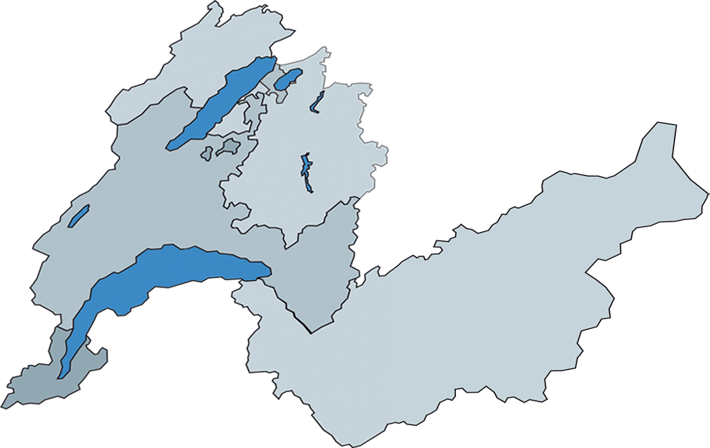

Zone
Déplacements dans le canton de Fribourg, Vaud et Valais.
NH installation, électricien basé à Fribourg pour les particuliers, gérances et professionnels dans le canton de Fribourg, Vaud et Valais.
Basée à Fribourg, NH installation intervient dans le canton de Fribourg, Vaud et Valais pour les installations électriques, la rénovation, le dépannage, les tableaux et l'éclairage.
L'entreprise travaille avec une approche directe: comprendre la demande, proposer une solution adaptée et livrer une installation facile à utiliser.
Déplacements dans le canton de Fribourg, Vaud et Valais.
Particuliers, gérances, commerces, bureaux et immeubles.

Le besoin est clarifié avant l'intervention.
La solution est expliquée simplement.
Le chantier est livré proprement.